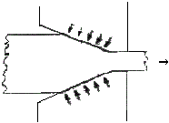
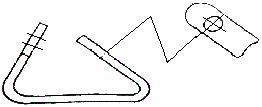
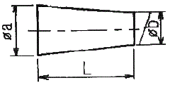
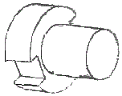
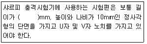
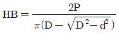
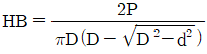
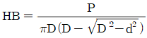
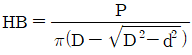

금속재료시험기능사 (2015-01-25 기출문제)
1과목: 금속재료일반
1. 금속의 결정구조를 생각할 때 결정면과 방향을 규정하는 것과 관련이 가장 깊은 것은?
- 밀러지수
- 탄성계수
- 가공지수
- 전이계수
(정답률: 81%)

2. 그림과 같은 소성가공법은?

- 압연가공
- 단조가공
- 인발가공
- 전조가공
(정답률: 83%)
3. 4%Cu, 2%Ni 및 1.5%Mg이 첨가된 알루미늄 합금으로 내연기관용 피스톤이나 실린더 헤드 등에 사용되는 재료는?
- Y 합금
- 라우탈(lautal)
- 알클래드(alclad)
- 하이드로날륨(hydronalium)
(정답률: 86%)
4. 구리 및 구리 합금에 대한 설명으로 옳은 것은?
- 구리는 자성체이다.
- 금속 중에 Fe 다음으로 열전도율이 높다.
- 황동을 주로 구리와 주석으로 된 합금이다.
- 구리는 이산화탄소가 포함되어 있는 공기 중에서 녹청색 녹이 발생한다.
(정답률: 83%)
5. 저용융점 합금의 용융 온도는 약 몇 ℃이하 인가?
- 250℃ 이하
- 450℃ 이하
- 550℃ 이하
- 650℃ 이하
(정답률: 87%)
6. 기체 급랭법의 일종으로 금속을 기체 상태로 한 후에 급랭하는 방법으로 제조되는 합금으로서 대표적인 방법은 진공 증착법이나 스퍼터링법 등이 있다. 이러한 방법으로 제조되는 합금은?
- 제진 합금
- 초전도 합금
- 비정질 합금
- 형상 기억 합금
(정답률: 69%)
7. 용융금속을 주형에 주입할 때 응고하는 과정을 설명한 것으로 틀린 것은?
- 나뭇가지 모양으로 응고하는 것을 수지상정이라 한다.
- 핵 생성 속도가 핵 성장 속도보다 빠르면 입자가 미세해 진다.
- 주형에 접한 부분이 빠른 속도로 응고하고 차차 내부로 가면서 천천히 응고한다.
- 주상 결정 입자 조직이 생성된 주물에서는 주상결정 입내 부분에 불순물이 집중하므로 메짐이 생긴다.
(정답률: 64%)
8. 다음 비철금속 중 구리가 포함되어 있는 합금이 아닌 것은?
- 황동
- 톰백
- 청동
- 하이드로날륨
(정답률: 83%)
9. 다음 철강 재료에서 인성이 가장 낮은 것은?
- 회주철
- 탄소공구강
- 합금공구강
- 고속도공구강
(정답률: 80%)
10. 공석강의 탄소함유량은 약 얼마인가?
- 0.15%
- 0.8%
- 2.0%
- 4.3%
(정답률: 86%)
11. 오스테나이트계 스테인리스강에 첨가되는 주성분으로 옳은 것은?
- Pb-Mg
- Cu-Al
- Cr-Ni
- P-Sn
(정답률: 83%)
12. 특수강에서 다음 금속이 미치는 영향으로 틀린 것은?
- Si:전자기적 성질을 개선한다.
- Cr:내마멸성을 증가시킨다.
- Mo:뜨임메짐을 방지한다.
- Ni:탄화물을 만든다.
(정답률: 72%)
13. 다음 중 비중(specific gravity)이 가장 작은 금속은?
- Mg
- Cr
- Mn
- Pb
(정답률: 79%)
14. Y합금의 일종으로 Ti과 Cu를 0.2% 정도씩 첨가한 합금으로 피스톤에 사용되는 합금의 명칭은?
- 리우탈
- 엘린바
- 문쯔메탈
- 코비탈륨
(정답률: 77%)
15. 제진 재료에 대한 설명으로 틀린 것은?
- 제진 합금으로는 Mg-Zr, Mn-Cu 등이 있다.
- 제진 합금에서 제진 기구는 마텐자이트 변태와 같다.
- 제진 재료는 진동을 제어하기 위하여 사용되는 재료이다.
- 제진 합금이란 큰 의미에서 두드려도 소리가 나지 않는 합금이다.
(정답률: 68%)
16. 2N M50×2-6h 이라는 나사의 표시 방법에 대한 설명으로 옳은 것은?
- 왼나사이다.
- 2줄 나사이다.
- 유니파이 보통 나사이다.
- 피치는 1인당 산의 개수로 표시한다.
(정답률: 84%)
17. 다음 가공방법의 기호와 그 의미의 연결이 틀린 것은?
- C-주조
- L-선삭
- G-연삭
- FF-소성가공
(정답률: 76%)
18. 끼워 맞춤에 관한 설명으로 옳은 것은?
- 최대 죔새는 구멍의 최대 허용 치수에서 축의 최소 허용 치수를 뺀 치수이다.
- 최소 죔새는 구멍의 최소 허용 치수에서 축의 최대 허용 치수를 뺀 치수이다.
- 구멍의 최소 치수가 축의 최대 치수보다 작은 경우 헐거운 끼워 맞춤이 된다.
- 구멍과 축의 끼워 맞춤에서 틈새가 없이 죔새만 있으면 억지 끼워 맞춤이 된다.
(정답률: 66%)
19. 척도가 1:2인 도면에서 실제 치수 20mm인 선은 도면 상에 몇 mm로 긋는가?
- 5mm
- 10mm
- 20mm
- 40mm
(정답률: 71%)
20. 수면이나 유면 등의 위치를 나타내는 수준면선의 종류는?
- 파선
- 가는 실선
- 굵은 실선
- 1점 쇄선
(정답률: 67%)
2과목: 금속제도
21. 제도용지에 대한 설명으로 틀린 것은?
- A0 제도용지의 넓이는 약 1m2이다.
- B0 제도용지의 넓이는 약 1.5m2이다.
- A0 제도용지의 크기는 594×841이다.
- 제도용지의 세로와 가로의 비는 1:√2이다.
(정답률: 84%)
22. 도면에서 중심선을 꺽어서 연결 도시한 투상도는?

- 보조 투상도
- 국부 투상도
- 부분 투상도
- 회전 투상도
(정답률: 66%)
23. 다음 도형에서 테이퍼 값을 구하는 식으로 옳은 것은?

- b/a
- a/b
- a+b/L
- a-b/L
(정답률: 70%)
24. 그림과 같은 물체를 제3각법으로 그릴 때 물체를 명확하게 나타낼 수 있는 최소 도면 개수는?

- 1개
- 2개
- 3개
- 4개
(정답률: 77%)
25. 상면도라 하며, 물체의 위에서 내려다 본 모양을 나타내는 도면의 명칭은?
- 배면도
- 정면도
- 평면도
- 우측면도
(정답률: 84%)
26. 실물을 보고 프리핸드로 그린 도면은?
- 계획도
- 제작도
- 주문도
- 스케치도
(정답률: 88%)
27. KS B ISO 4287 한국산업표준에서 정한 ‘거칠기 프로파일에서 산출한 파라미터’를 나타내는 기호는?
- R-파라미터
- P-파라미터
- W-파라미터
- Y-파라미터
(정답률: 72%)
28. 쇼어경도 시험의 특징이라 볼 수 없는 것은?
- 개인오차나 측정 오차가 나오기 쉽다.
- 압흔이 극히 적어 제품에 직접 검사할 수 있다.
- 조작이 간편해서 신속히 경도를 측정할 수 있다.
- 쇼어 경도를 나타내는 기호로는 HV를 사용한다.
(정답률: 66%)
29. 금속을 가열하거나 용융금속을 냉각하면 원자배열의 변화하면서 상변화가 생긴다. 이와 같이 구성원자의 존재형태가 변하는 것을 무엇이하 하나?
- 변태
- 자화
- 평형
- 인장
(정답률: 89%)
30. 크로웰 경도시험에서 다이아몬드콘 압입자를 사용하기에 가장 적합한 것은?
- 연강
- 경질합금
- 비철합금
- 구리합금
(정답률: 66%)
31. 다음 중 감성계수 G를 측정하는 시험은?
- 커핑시험
- 피로시험
- 에릭션시험
- 비틀림시험
(정답률: 55%)
32. 탐촉자에서 거리 또는 방향이 다른 근접한 2개의 홈집을 표시기에서 2개의 에코로 구별할 수 있는 성능은?
- 게인
- 게이트
- 분해능
- 음향 렌즈
(정답률: 58%)
33. 주철과 같은 취성 재료의 비례한도, 항복점, 탄성계수, 압축강도 등을 시험하기에 적합한 재료시험 방법은?
- 경도시험
- 압축시험
- 충격시험
- 비틀림시험
(정답률: 56%)
34. 다음 보기의 ()안에 들어갈 시험편의 길이는?

- 35mm
- 55mm
- 70mm
- 130mm
(정답률: 73%)
35. 피로시험의 결과로 나타나는 곡선은?
- S곡선
- S-N곡선
- 연속냉각변태곡선
- 응력-변형률 곡선
(정답률: 78%)
36. 비금속 개재물 검사에서 구형 산화물 종류가 속한 그룹은?
- 그룹 A
- 그룹 B
- 그룹 C
- 그룹 D
(정답률: 48%)
37. 매크로조직시험의 결과 보고서에 DT-Sc-N으로 적혀 있었다면 알 수 없는 사항은?
- 모세균열
- 중심부편석
- 수지상결정
- 비금속개재물
(정답률: 50%)
38. 왕복운동을 하는 동작부분과 움직임이 없는 고정부분 사이에 형성되는 위험점은?
- 끼임점
- 물림점
- 협착점
- 절단점
(정답률: 67%)
39. 오스테나이트 입도시험으로 이용되는 방법이 아닌 것은?
- 비교법
- 천칭법
- 절단법
- 평적법
(정답률: 61%)
40. 누설검사에서 기체의 평균 자유 행로가 누설의 단면 치수와 거의 같을 때 발생하는 흐름은?
- 전이 흐름
- 층상 흐름
- 교란 흐름
- 음향 흐름
(정답률: 64%)
3과목: 금속재료조직 및 비파괴시험
41. 금속의 변태를 측정하는 시험 방법이 아닌 것은?
- 열 분석법
- 자기 분석법
- 평형 측정법
- 전기 저항법
(정답률: 59%)
42. 조미니 시험법에서 분출되고 물의 강도를 일정하게 하기 위해서 규정하고 있는 분수 자유 높이는?
- 12±1mm
- 25±5mm
- 65+10mm
- 100±15mm
(정답률: 54%)
43. 불꽃 시험을 할 때, 그라인더에서부터 불꽃의 뿌리 부분, 불꽃의 중앙 부분, 그리고 불꽃의 앞 끝 부분에서 관찰할 내용으로 옳은 것은?
- 뿌리:유선의 흐름, 중앙:유선의 각도, 앞 끝:불꽃의 파열
- 뿌리:유선의 흐름, 중앙:불꽃의 파열, 앞 끝:유선의 각도
- 뿌리:유선의 각도, 중앙:불꽃의 파열, 앞 끝:유선의 흐름
- 뿌리:유선의 각도, 중앙:유선의 흐름, 앞 끝:불꽃의 파열
(정답률: 65%)
44. 18:8 스테인리스강과 탄소강을 가장 쉽게 빨리 구분할 수 있는 방법은?
- 파괴 상태 여부로 구분한다.
- 색깔과 과열상태로 구분한다.
- 자성의 부착여부로 판별한다.
- 화학품에 의한 부식 정도로 판정한다.
(정답률: 63%)
45. 자분탐상검사의 특징을 설명한 것 중 옳은 것은?
- 시험체 심부의 결함을 검사할 수 있다.
- 시험체는 강자성체가 아닌 경우에만 적용할 수 있다.
- 전극이 접촉되는 부분에서 국부적인 가열 또는 아크로 인하여 시험체 표면이 손상될 우려가 있다.
- 균열과 같은 선 모양의 결함은 검출할 수 없지만 일반적으로 핀홀과 같은 점 모양의 결함 검출 능력은 우수하다.
(정답률: 62%)
46. 방사선을 취급 및 사용할 때 수반되는 외부방사선 피폭의 방어 방법으로 적용되는 3가지 원리가 아닌 것은?
- 방사선의 발생시간 즉, 사용시간을 줄인다.
- 방사선의 선원과 사람과의 거리를 멀리 한다.
- 방사선의 선원과 사람사이에 차폐물을 설치한다.
- 방사선 동위원소 중 가능한 낮은 강도를 가진 것을 사용한다.
(정답률: 68%)
47. 육안 또는 10배 이하의 확대경으로 관측하여 결정립의 지름이 1.0mm 이상의 것에서 조직의 분포 상태, 모양, 크기 또는 편석의 유무로 내부 결함을 판정하는 검사법은?
- 정량 조직 검사
- 매크로 조직 검사
- 금속 현미경 조직 검사
- 전자 현미경 조직 검사
(정답률: 74%)
48. 설퍼프린트 시험 검사로 검출할 수 있는 것은?
- SiO2의 분포 검출
- 황의 분포 검출
- 탄소량의 분포 검출
- 시멘타이트의 조직 검출
(정답률: 69%)
49. 주철과 같은 취성 재료의 경우 인장시험으로는 연신량이 매우 적어 측정하기가 곤란하여 치수가 긴 시험편을 써서 그 만극량을 측정하는 시험은?
- 굽힘시험
- 충격시험
- 경도시험
- 인장시험
(정답률: 61%)
50. 브리넬 경도 시험에서 경도값을 구하는 식으로 옳은 것은? (단, P는 가하는 하중(kgf). D는 강구 압입자 지름(mm), d는 압입 자국의 지름(mm)이다.)




(정답률: 69%)
51. 판재의 굽힘가공에서 외력을 제거하면 굽힘 각도가 벌어지는 현상은?
- 벤딩(bending)
- 스프링 백(spring back)
- 넥킹(necking)
- 바우싱거 효과(bauschinger effect)
(정답률: 56%)
52. 다음 중 피로시험을 할 때 굽힘 하중을 걸고 시험편을 회전시키는 반복 시험은?
- 반복 인장 압축 시험
- 왕복 반복 굽힘 시험
- 회전 반복 굽힘 시험
- 반복 비틀림 시험
(정답률: 73%)
53. 현미경 조직검사를 실시하기 위한 안전 및 유의사항으로 틀린 것은?
- 현미경은 정교하므로 렌즈는 데시케이터에 넣어 보관한다.
- 시험편 연마 작업시에는 시험편이 튀지 않도록 단단히 잡는다.
- 시편절단시 냉각수를 사용하지 않으며, 초고속으로 절단한다.
- 시험편 채취시에는 절단 작업에 사용되는 도구의 안전 사항을 점검한다.
(정답률: 83%)
54. 실린더와 피스톤 등과 같이 왕복 운동에 의한 미끄럼 마멸을 일으키는 재질을 시험하는 것은?
- 구름 마멸 시험
- 금속 미끄럼 마멸 시험
- 광물질 미끄럼 마멸 시험
- 왕복 미끄럼 마멸 시험
(정답률: 78%)
55. 크리프 시험에 대한 설명 중 옳은 것은?
- 크리프 2단계는 감속 크리프라 한다.
- 철강은 250℃ 이하의 온도에서만 크리프 현상이 일어난다.
- 어떤 재료에 크리프가 생기는 요인은 온도와 하중과 시간이다.
- 크리프 한도란 일정온도에서 어떤 시간 후에 크리프 속도가 1이 되는 응력이다.
(정답률: 64%)
56. 강의 오스테나이트 결정 입도 시험 방법 중 교차점의 수를 세는 방법에 대한 설명으로 옳은 것은?
- 측정선이 결정입계에 접할 때는 1/2개의 교차점으로 계산한다.
- 측정선의 끝이 정확하게 하나의 결정입계데 닿을 때는 교차점의 수를 1/2개로 계산한다.
- 교차점이 우연히 3개의 결정립이 만나는 곳에 일치할 때는 한 개의 교차점으로 계산한다.
- 불규칙한 형상을 갖는 결정립의 경우, 측정선이 두 개의 다른 지점에서 같은 결정립을 양분할 때는 한 개의 교차점으로 계산한다.
(정답률: 50%)
57. 철강의 부식액으로 많이 사용하는 나이탈의 조성은?
- 질산 5mL, 물 100mL
- 염산 5mL, 물 100mL
- 진한 질산 5mL, 알콜 100mL
- 진한 질산 10mL, 진한 염산 10mL
(정답률: 63%)
58. 100배율 현미경 조직사진에서 400개의 입자를 관찰할 수 있었던 시험편을 200배의 현미경 배율로 바꿀 경우, 같은 면적에서 관찰되는 입자수는?
- 100
- 200
- 300
- 400
(정답률: 64%)
59. 표점 거리 200mm인 시험편을 인장 시험한 후 표점 거리가 260mm가 되었다면 연신율은?
- 10%
- 20%
- 30%
- 40%
(정답률: 75%)
60. 와류 탐상 검사의 특징을 나열한 것 중 틀린 것은?
- 시험체에 접촉하지 않고 검사할 수 있으므로 검사 속도가 빠르고 자동화가 쉽다.
- 열교환기 내의 배관 등, 사함이 접근할 수 없는 부분의 탐상이 가능하다.
- 결함의 형상이나 깊이 및 종류를 정확하게 알 수 있다.
- 검사 결과의 데이터 기록과 보존이 쉽다.
(정답률: 55%)